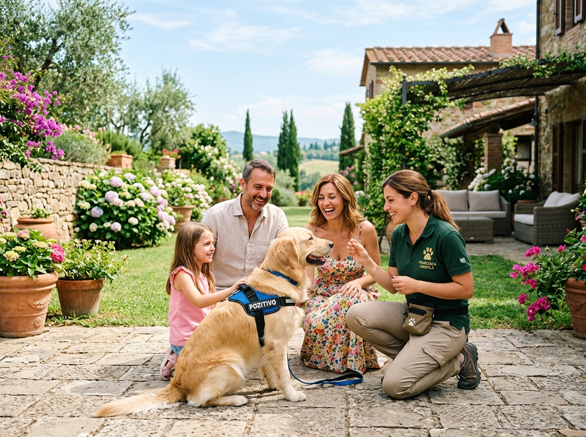
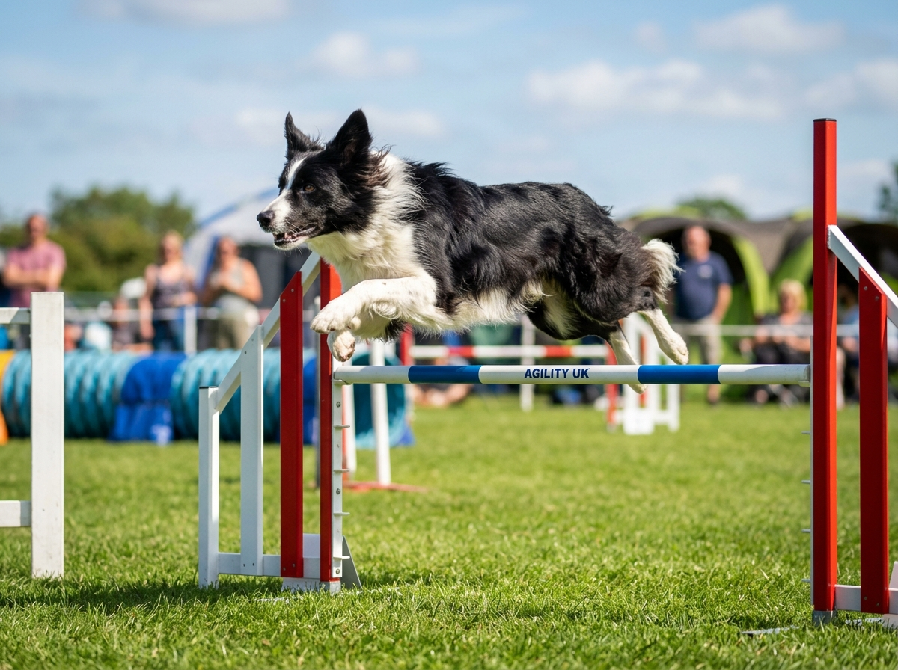

Trova il percorso ideale per il tuo cane
Tutti i corsi includono supporto telefonico e via WhatsApp tra una lezione e l'altra.
 2 - 6 Mesi
2 - 6 Mesi
Puppy Class & Socializzazione
Il periodo tra i 2 e i 5 mesi è la cosiddetta "finestra di socializzazione". Un'esperienza guidata e positiva in questa fase previene l'80% delle problematiche comportamentali future (paura dei rumori, aggressività verso altri cani, diffidenza verso estranei).
- Gestione bisogni fuori casa & mordicchiamento
- Comunicazione canina e prime regole serene
- Interazione protetta con altri cuccioli ed adulti equilibrati
 Dai 6 Mesi in poi
Dai 6 Mesi in poi
Educazione Base & Buone Maniere
Dedicato a cani giovani e adulti che necessitano di acquisire autocontrollo, imparare a camminare con il guinzaglio morbido senza tirare e rispondere con prontezza al richiamo libero anche in presenza di stimoli o distrazioni.
- Condotta rilassata con pettorina ad H
- Richiamo immediato e sicuro in libertà
- Resta e attese serene al bar o in pubblico
 Padova Centro
Padova Centro
Educazione Urbana a Padova Centro
Sessioni pratiche itineranti nei luoghi simbolo della nostra città: Prato della Valle, Piazza dei Signori, lungo il Piovego, parchi cittadini e locali pet friendly. Alleniamo il cane a gestire stimoli complessi come biciclette, monopattini, folla e piccioni.
- Abituazione al traffico e mezzi di trasporto
- Condotta rilassata in mezzo alla folla del centro
- Capacità di riposare sereni sotto il tavolo al bar
 Percorso Su Misura
Percorso Su Misura
Rieducazione & Cani Reattivi
Seguito direttamente dalla nostra istruttrice comportamentale. Interveniamo su cani fobici, cani che abbaiano e si scagliano contro altri al guinzaglio, ansia da separazione cronica, possessività sulle risorse (cibo, giochi) e paure da rumori forti (temporali, fuochi).
- Desensibilizzazione e controcondizionamento
- Gestione dei trigger e distanze di sicurezza
- Collaborazione con Medici Veterinari Esperti in Comportamento

A Casa TuaLezioni a Domicilio (Padova & Dintorni)
L'educatore viene direttamente a casa tua a Padova, Selvazzano, Rubano, Limena, Albignasego, Abano Terme o Vigonza. Fondamentale per problemi legati all'accoglienza di un nuovo cane, convivenza con gatti, abbaio alla porta o gestione del giardino.
- Analisi dell'ambiente domestico reale
- Passeggiate nel tuo quartiere abituale
- Orari flessibili concordati su misura

Sport & DivertimentoAttività Olfattive & Agility Dog
Attività ludiche e sportive non competitive per scaricare l'energia in modo costruttivo. Attraverso percorsi di mobility, agility gentile e ricerca di sostanze (nosework), aumentiamo l'autostima del cane e la sintonia del binomio.
- Sviluppo delle competenze olfattive naturali
- Miglioramento della propriocezione corporea
- Adatto a cani di tutte le taglie e razze